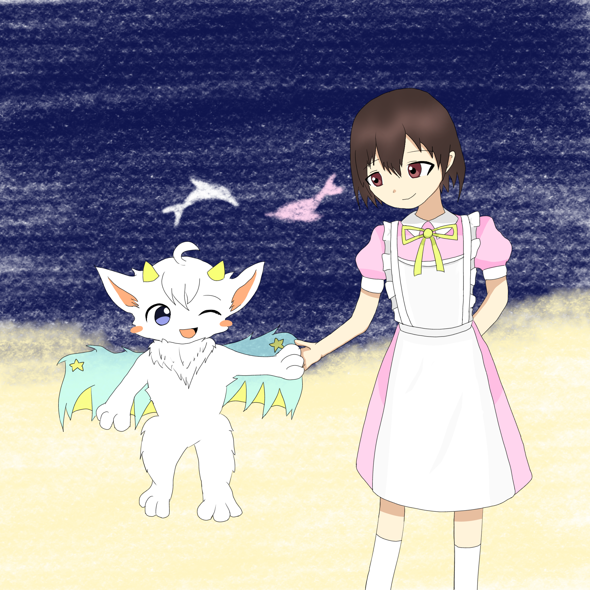

2026年8月25日
ウディコンお疲れ様でした。そして、みなさん応援ありがとうございました。 いただいたコメントは全て読まさていただきました。次回作を作るときの参考にさせていただきます。 投票結果が出るまで、まるで数年前の大学受験のような、妙な緊張感が走っていてちょっと気持ちが 落ち着いてません...とはいえ、結果がどうであれ、いろんな方に遊んでもらっただけでも私は十分 満足できました！ありがとうございました。
ウディコンお疲れ様でした。そして、みなさん応援ありがとうございました。 いただいたコメントは全て読まさていただきました。次回作を作るときの参考にさせていただきます。 投票結果が出るまで、まるで数年前の大学受験のような、妙な緊張感が走っていてちょっと気持ちが 落ち着いてません...とはいえ、結果がどうであれ、いろんな方に遊んでもらっただけでも私は十分 満足できました！ありがとうございました。
先日、虹幻こんぷれっくすを遊びました！ 創作をテーマにした物語にとても共感し、終始ゲームに熱中してました！ このゲームに出会えて本当に良かった...
↓ 拙いですが、ファンアートです

こんにちは。先日、縫界史のオリジナルサウンドトラックを作成しました。提供してくださった 楽曲の公開に快諾してくださったMasuka5353さんとDampf_Lazyさんには感謝してもしきれません。 また、Masuka5353さんがアレンジサウンドトラックを作成してくださいました。どの楽曲も素敵で、 Masukaさんに「どの曲が最推し？」と聞かれた際は、一番を決めることができませんでした(笑) ぜひサントラを聴いていってもらえると嬉しいです！
お久しぶりです。実はウディコンにエントリーさせてもらいました。 作品は【54】縫界史です。いくつかの音楽やグラフィック素材はDampf_Lazyさん Masuka5353さんが担当してくれました。ありがとうございました。 大学の試験期間と重なってデバックのための時間が十分にとれておらず、 不具合の修正が重なってしまいました...すみません。 ver2.2以降の更新で、遊びやすさに関する改善を行いました。 既にプレイしてくださった方はもちろん、まだの方もぜひ遊んでみてください。 ご意見ご感想、いつでもお待ちしております。
ようやく新学期のドタバタもおさまってきたところです... windowsとipadでリアルタイム同期しながらノート取れたらいいなぁ。 おすすめの方法があったら何方か教えていただきたいです。
ホテルの空間とかって迷宮みたいでいいですよね。 何処までも続いてそうで、子供の頃は怖かったのと同時に ワクワクしてました。
気づけばもう3月が終わってしまう...早いなあ。 最近はlucids blockというゲームにハマっています。 ここまでリミナルスペースを再現したゲームはたぶん初... だまされたと思ってやってみて！
音楽プレーヤーを追加しました。今まで私が作ってきた曲の一部を公開しています。 よければ聞いて行ってください。 それらの曲は今製作中のRPGで流れる予定です。楽しみにしていてください！
ホームページを公開してみました。そういえばあの掲示板ってちゃんと使えるのかな... ここまで大変だった...慣れてなかったから勉強になりました！
初めてホームページを作成しました！これからもっと充実させていこうと思います！
テストメッセージ